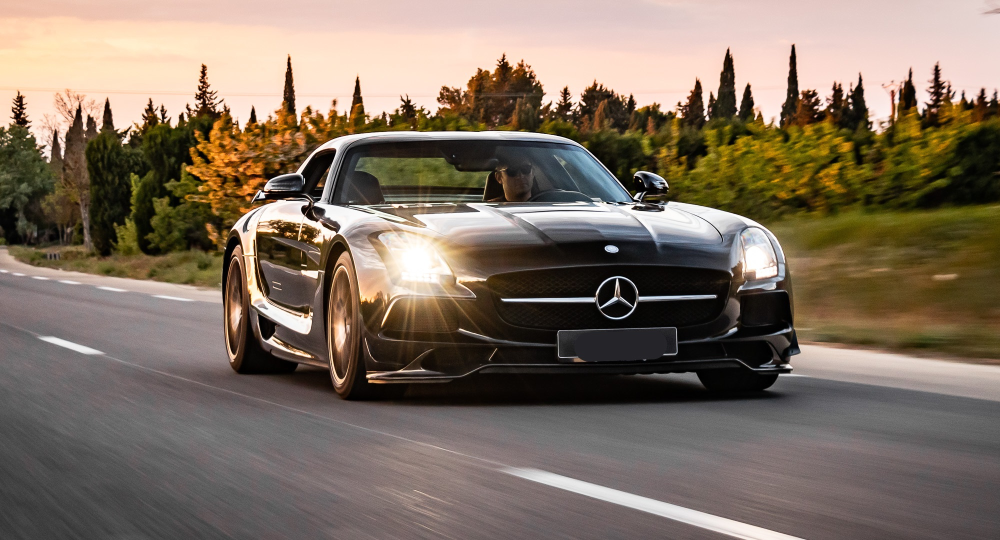

Mercedes-Benz ხელსაწყოები იერსახე დამალვა ტექსტი პატარა სტანდარტული დიდი სიგანე სტანდარტული განიერი ფერი (ბეტა) ავტომატური ნათელი ბნელი მასალა ვიკიპედიიდან — თავისუფალი ენციკლოპედია Mercedes-Benz AG ტიპი შვილობილი კომპანია (AG)[1] დარგი საავტომობილო წინამორბედი Benz & Cie. (1883–1926) Daimler-Motoren-Gesellschaft (1890–1926) Mercedes (1901–1926) დაფუძნდა 28 ივნისი, 1926; 99 წლის წინ[შენიშვნა 1] სათავო ოფისი შტუტგარტი, გერმანია მოცული ტერიტორიება მსოფლიო პროდუქცია ავტომობილები მსუბუქი კომერციული ტრანსპორტი ბრენდები Mercedes-Benz EQ Mercedes-Maybach მშობელი Daimler AG[1] შვილობილ(ებ)ი Mercedes-AMG[2] ფილიალი Mercedes-Benz Cars[3] Mercedes-Benz Vans საიტი www.mercedes-benz.com Mercedes-Benz (გერმანულად: [mɛɐ̯ˈtseːdəsˌbɛnts, -dɛs-]),[4][5] ან უბრალოდ Mercedes, — ავტომობილების გერმანული ბრენდი და – როგორც Mercedes-Benz AG– 2019 წლიდან Daimler AG-ის შვილობილი კომპანია.[1] Mercedes-Benz ცნობილია მდიდრული და კომერციული ავტომობილების წარმოებით.[შენიშვნა 2] სათავო ო ფისი მდებარეობს შტუტგარტში, ბადენ-ვიურტემბერგი. Mercedes-Benz-ის ბრენდის პირველი ავტომობილი 1926 წელს იქნა წარმოებული. 2018 წელს Mercedes-Benz პრემიუმ ავტომობილების უმსხვილესი გამყიდველი იყო. მან 2,31 მილიონი სამგზავრო ავტომობილი გაყიდა.[6] 1906 წლის მერსედეს-სიმპლექსი, გერმანიის მუზეუმი 1957 წლის მერსედეს-ბენცი 300Sc კაბრიოლეტი 1959 წლის მერსედეს-ბენცი W120 მოდელი 180 მერსედეს-ბენცი, S-კლასი მერსედეს-ბენცი ვარიო ბენედიქტე XVI მერსედეს-ბენცის პოპემობილით სან-პაულუს ქუჩებში ისტორია მერსედეს-ბენცი გერმანული ავტოგიგანტის - „დაიმლერის ავტოკორპორაციის“ (Daimler AG) ლეგენდარული ბრენდია. ინოვაციების დაუოკებელი ძიების შედეგად „მერსედეს-ბენცი“ იქცა მსოფლიოში პირველ საავტომობილო მარკად, ამ სამარკო ნიშნის ქვეშ იგულისხმება კომფორტიული, მდგრადი და ელეგანტური ავტომობილი. დღეისთვის მერსედეს-ბენცის სამარკო ნიშნის ქვეშ მზადდება ფართო არეალის და დანიშნულების ტრანსპორტი: სამგზავრო მსუბუქი ავტომობილები, სამგზავრო/სამხედრო მსუბუქი ყველგანმავალი ავტომობილები, სატვირთო ავტომობილები, ავტობუსები, მინი-ვენები და ა.შ. ბრენდის სახელი - „მერსედეს-ბენცი“ წარმოიშვა 1926 წელს ორი ბრენდის – მერსედესისა (დაიმლერ-ძრავების საზოგადოება DMG) და ბენცის (ბენცი და კომპანია Benz & Co.) შეერთებით. თავდაპირველად ჯერ კიდევ 1890 წელს დაარსებული „დაიმლერ-ძრავების საზოგადოება“ მის მიერ წარმოებულ ავტომობილებს მერსედესის სახელით არ ყიდდა. მერსედესის როგორც ბრენდის სახელის წარმოშობა ბიზნესმენ ემილ ელინეკთანაა დაკავშირებული, ეს უკანასკნელი 1898 წლიდან დაიმლერის ავტომობილებით ვაჭრობდა. 1888 წელს ემილ ელენიკი ფსევდონიმით „მერსედესი“ (თავისი ქალიშვილის ადრიანა მანუელა რამონა ელინეკის პატივსაცემად, რომელსაც მოფერებით სახელს მერსედესს ეძახდნენ) ნიცაში გამართულ ავტორბოლებზე იღებდა მონაწილეობას. თუმცა ამ დროისათვის „მერსედესი“ ჯერ კიდევ არ იხმარებოდა ავტომობილის სახელად, არამედ ის მხოლოდ მძღოლის სახელი იყო. 1900 წელს ელინეკმა „დაიმლერ - ძრავების საზოგადოებასთან“ მიაღწია შეთანხმებას ახალი უფრო მძლავრი ძრავიანი მოდელის შექმნაზე, რომელსაც სახელი „მერსედეს-დაიმლერი“ დაერქმეოდა. სწორედ ამ დროს იქნა „მერსედესი“, როგორც პროდუქტის სახელი გამოყენებული. იმავდროულად ელენიკი დაიმლერის დისტრიბუტორი ხდება და უკვეთავს მას 36 ცალ ავტომობილს, საერთო თანხით 550.001 მარკა (დღევანდელი კურსით დაახლოებით 3 მილიონი ევრო), მოგვიანებით იგი დაიმლერს უკვეთავს დამატებით კიდევ 36 ცალ ავტომობილს, რომლებიც 8 ცხენის ძალიანი ძრავებით იყვნენ აღჭურვილნი. ამის შემდეგ, 1901 წლიდან, „მერსედეს-ავტომობილები“ (უკვე ეს სახელი არა მხოლოდ მძღოლისთვის, არამედ უშუალოდ მანქანების სახელად გამოიყენებოდა) წარმატებით მონაწილეობდნენ ნიცაში გამართულ ავტორბოლებში, რამაც გაცილებით ფართო მასშტაბებზე გაშალა მერსედესის ცნობადობის ფაქტორი. საბოლოოდ დაიმლერ - ძრავების კორპორაციამ 1902 წელს ბრენდის სახელწოდებაზე - „მერსედესი“ საავტორო უფლებები დაიცვა. ბრენდის ცნობილი სიმბოლოს - ვარსკვლავის რეგისტრაცია კი 1909 წელს მოხდა. 1926 წელს „დოიჩე-ბანკის“ შუამავლობით „დაიმლერ- ძრავების საზოგადოება“ და მისი კონკურენტი „ბენცი და კომპანია“ შეერთდა, რის შედეგადაც შეიქმნა „დაიმლერ-ბენცის ავტოკორპორაცია“, სწორედ ამ თარიღს უკავშირდება „მერსედეს-ბენცის“ როგორც ბრენდის სახელწოდების წარმოშობა. აღსანიშნავია ისიც, რომ თუ მერსედეს ელინეკის გარეშე ცნობილ ავტომობილებს შესაძლოა სულ სხვა სახელი ჰქონოდა, ბერტა ბენცის (გათხოვებამდე რინგერის) გარეშე ისინი შესაძლოა საერთოდაც არ შექმნილიყო. 22 წლის ასაკში ამ ჭკვიანმა ახალგაზრდა ქალბატონმა მამისგან მზითევი გამოითხოვა და მთელი ფული კარლს ბენცისა და ავგუსტ რიტერის მეტალურგიულ და მანქანათმშენებელ საწარმოში ჩადო. ერთი წლის შემდეგ კი ბერტა კარლ ბენცს გაჰყვა ცოლად. 1888 წლის აგვისტოს ერთ დილას, ფრაუ ბენცმა ქმრისგან უკითხავად გამოიყვანა მისი თვითმოძრავი ეტლი (მართალია, იმხანად ამ ეტლს უკვე ჰქონდა მიღებული ჯილდო მიუნხენის გამოფენაზე, მაგრამ ხალხი მას მაინც ისე აღიქვამდა, როგორც ერთგვარ გასართობს და მასში პრაქტიკული გამოყენების საბაბს ვერ ხედავდა) და გაემგზავრა სტუმრად დედასთან. დედამისი კი მათი სახლიდან 106 კილომეტრის მოშორებით ცხოვრობდა. ბერტამ თან ორი ვაჟიც გაიყოლა. მანამდე არავის გაუვლია ამხელა მანძილი თვითმოძრავი ეტლით. ბერტა ბენცის მოგზაურობა წარმატებით დასრულდა. ეტლმა ნამდვილი ფურორი მოახდინა. სულ მალე კი ბენცის გამოგონებაზე ყველა ალაპარაკდა და ახალი ავტომობილების დამზადების შეკვეთებიც მოაწყდა. 1893 წელს „Motorwagen“-ის ტიპის 25 ავტომობილი გაიყიდა, მოგვიანებით კი გამოჩნდა მოდელი ველო. მოკლედ, კარლ ბენცის ბიზნესი, გონიერი მეუღლის წყალობით წარმატებით განვითარდა. დღესდღეობით მერსედესის მუზეუმი განთავსებულია გერმანიის ქალაქ შტუტგარტში, სადაც დაინტერესებულ მნახველს შეუძლია იხილოს მერსედეს-ბენცის ისტორია დაწყებული მსოფლიოს პირველი ავტომობილით - „Motorwagen“-ით და დამთავრებული ლეგენდარული „Silberpfeil“-ით. მოდელები მოდელი / ძრავი გამოშვების პერიოდი სიმძლავრე ჳვ (ცძ) ლიმუზინი (W124) 200 D 1985-1993 53 (72), ab 2/1989 55 (75) E 250 Diesel 1993-1996 83 (113) 250 D Turbo 1988-1993 93 (126) E 250 Turbodiesel 1993-1995 93 (126) 300 D 1985-1993 80 (109), ab 2/89 83 (113), mit KAT 81 (110) E 300 Diesel 1993-1995 100 (136) 300 D 4MATIC 1987-1991 80 (109), ab 2/89 83 (113), mit KAT 81 (110) 300 D Turbo 1986-1993 105 (143), ab 9/88 108 (147) E 300 Turbodiesel 1993-1995 108 (147) 300 D Turbo 4MATIC 1988-1993 108.5 (143), ab 9/88 108 (147) E 300 Turbodiesel 4MATIC 1993-1995 108 (147) 200 1985-1990 80 (109), mit KAT 77 (105) 200 E 1985-1993 90 (122), ab 9/89 87 (118), ab 9/92 mit 100 (136) E 200 1993-1995 100 (136) 230 E 1985-1992 100 (136), ab 9/89 97 (132) 220 E 1992-1993 110 (150) E 220 1993-1996 110 (150) 260 E 1985-1992 125 (170), ab 9/85 122 (166), mit KAT 118 (160) 260 E 4MATIC 1987-1991 122 (166), mit KAT 118 (160) 280 E 1992-1993 145 (197) E 280 1993-1995 142 (193) 300 E 1985-1992 140 (190), ab 9/85 138 (188), mit KAT 132 (180) 300 E 4MATIC 1987-1993 138 (188), mit KAT 132 (180) E 300 4MATIC 1993-1995 132 (180) 300 E-24 1989-1992 162 (220) 320 E 1992-1993 162 (220) E 320 1993-1995 162 (220) 400 E 1991-1993 205 (279) E 420 1993-1995 205 (279) 500 E 1991-1993 240 (326) E 500 1993-1995 235 (320) E 60 AMG 1993-1994 280 (381) დაგრძელებული (V124) 250 D Lang 1990-1993 69 (94), mit KAT 66 (90) E 250 Diesel Lang 1993-1994 83 (113) 260 E Lang 1990-1992 118 (160) 280 E Lang 1992-1993 145 (197) E 280 Lang 1993-1994 142 (193) T-მოდელი (კომბი) (W124 T) 200 TD 1984-1995 53 (72), ab 2/89 55 (75) 250 TD 1984-1993 66 (90), ab 2/89 69 (94), mit KAT 66 (90) E 250 Diesel 1993-1996 83 (113) 250 TD Turbo 1988-1995 93 (126) E 250 Turbodiesel 1993-1996 93 (126) 300 TD 1984-1995 80 (109), ab 2/89 83 (113) E 300 Diesel 1993-1996 100 (136) 300 TD Turbo 1986-1993 105 (143), ab 9/88 108 (147) E 300 Turbodiesel 1993-1996 108 (147) 300 TD Turbo 4MATIC 1987-1993 105 (143), ab 9/88 108 (147) E 300 Turbodiesel 4MATIC 1993-1995 108 (147) 200 T 1985-1990 80 (109), mit KAT 77 (105) 200 TE 1988-1993 90 (122), mit KAT 87 (118), ab 9/92 100 (136) E 200 T 1993-1996 100 (136) 230 TE 1985-1992 100 (136), mit KAT 97 (132) 220 TE 1992-1993 110 (150) E 220 T 1993-1996 110 (150) 280 TE 1992-1993 145 (197) E 280 T 1993-1996 142 (193) 300 TE 1985-1992 138 (188), mit KAT 132 (180) 300 TE 4MATIC 1987-1993 138 (188), mit KAT 132 (180) E 300 T 4MATIC 1993-1995 132 (180) 300 TE-24 1989-1992 162 (220) 320 TE 1992-1993 162 (220) E 320 T 1993-1996 162 (220) E 36 T AMG 1993-1996 200 (272) კუპე (C124) 200 CE 1990-1993 90 (122), mit KAT 118, ab 9/1992 100 (136) E 200 Coupé 1994-1995 100 (136) 230 CE 1987-1992 100 (136), mit KAT 97 (132) 220 CE 1992-1993 110 (150) E 220 Coupé 1993-1996 110 (150) 300 CE 1987-1992 138 (188), mit KAT 132 (180) 300 CE-24 1989-1992 162 (220) 320 CE 1992-1993 162 (220) E 320 Coupé 1993-1996 162 (220) E 36 AMG Coupé 1993-1996 200 (272) კაბრიოლეტი (A124) 300 CE-24 Cabriolet 1992-1993 162 (220) E 200 Cabriolet 1993-1997 100 (136) E 220 Cabriolet 1993-1997 110 (150) E 320 Cabriolet 1993-1997 162 (220) E 36 AMG Cabriolet 1993-1997 200 (272) რესურსები ინტერნეტში ვიკისაწყობში არის გვერდი თემაზე: Mercedes-Benz Official Mercedes-Benz website დაარქივებული 2012-03-12 საიტზე Wayback Machine. Official Mercedes-Benz Cars division guide ვიდეო Mercedes-Benz YouTube channel შენიშვნები და სქოლიო შენიშვნები ↑ Daimler-Benz-ის (Daimler AG-ს წინამორბედი) მიერ სავაჭრო ნიშან Mercedes-Benz-ის დაარსება. კომპანია Mercedes-Benz დაარსდა 2019 წელს. ↑ 2019 წლიდან მერსედესის ბრენდის მძიმე კომერციული ტრანსპორტის (სატვირთო მანქანები და ავტობუსები) აწარმოებს და მართავს Daimler AG-ს შვილობილი კომპანია —Daimler Truck AG.
 Home |